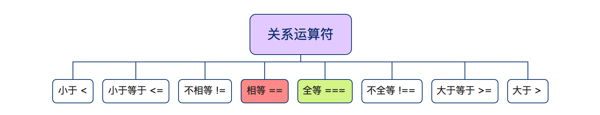

javaScript系列 [17]-运算符
JavaScript语言中的运算符如果按照符号来划分那么总体可以分成标点符号所表示的运算符和关键字运算符两大类，其中前者指代的是类似于+、*、&&、==等运算符，而后者指代的是类似于in、delete、typeof以及instanceof的运算符。需要说明的是，本文只介绍前者，也就是所谓标点符号所表示的运算符。
其实，如果按照运算符的作用和具体使用方式来划分，又可以分成如上图所示的基本算术运算符、逻辑运算符、关系运算符、赋值运算符等几种，而这也是开发中习惯的分类方式。听上去感觉非常繁杂甚至让人害怕，其实 enmmm ~ 大可不必 ** : )**
接下来，我将分别介绍JavaScript中各种类型的运算符，包括它们都有哪些具体的运算符，应该如何使用，使用的示例代码以及额外的注意点等(位运算符不在本文说明的范围，有兴趣的朋友可以参考 数据安全系列 XOR 这篇文章。
基本算术运算符
在这里我们先介绍基本的算术运算符，它们是 *(乘法)、/(除法)、+(加法)、-(减法)和 %(求余|模运算)。这些运算符中，除了+(加法)稍微复杂点外，其余的四种运算符都很简单，就是简单的求积、求商、差以及余数。
1 | var num1 = 8,num2 = 26; |
算术运算符的使用注意点说明
① 除加法外，其他运算符在必要时会将操作数转换为数字，如
无法转换则结果为NaN。
② 除数为0的结果为正无穷大或者是负无穷大，而0/0的结果是NaN。
③ 模(%)运算中，计算的结果和第一个操作数的符号保持一致，且模运算也适用于整数和浮点数。
④ 加法(+)可以对两个数字做加法，也可以用来连接字符串，具体的情况可以参考下面的示例代码。
1 | /*算术运算符的使用注意点*/ |
特别说明 处理+运算符的时候，如果操作数都是数字那就做加法计算，如果都是字符串那就拼接，如果是此外的其他情况，那运算是默认会执行必要的类型转换，而运算符的行为依赖于类型转换的结果，加号的转换规则需要优先考虑字符串连接。
关系运算符
关系运算符 用于测试两个值之间的关系,比如”相等”、”大于”等，根据关系是否存在(成立)而返回 true 或者是 false。关系表达式总是返回一个布尔值,通常用在if、while以及for语句中用于控制程序的执行流程。下面将依次介绍关系运算符中的比较运算符(<、<=、>、>=) 和 (不)相(全)等运算符。
比较运算符 用来检测两个操作数的大小关系(数值大小或者字母表的顺序)。需要注意JavaScript字符串是一个由16位整数值组成的序列，字符串的比较本质上是对两个字符串中的字符对应的数值进行比较，而且字符串比较是区分大小写的，所有的大写的ASCII字母都”小于”小写的ASCII字母，点击查看ASCII表。
1 | /*比较运算符的简单使用：返回值均为布尔值*/ |
比较运算符 的操作数可以是任意类型的，但只有 数字和字符串才能真正的执行比较操作 ，其它的操作都将进行类型转换。在进行类型转换的时候，比较运算符更偏爱数字所以会优先把操作数都转换为数字再比较，只有当两个操作数都是字符串的时候才会进行字符串的比较( 字母表顺序 )。
1 | /*如果比较运算符的两个操作数类型不都是字符串和数字的情况~*/ |
简单总结下，如果比较运算符的两个操作数类型不同(不全是数字或者不全是字符串)的时候，会优先把操作数转换为数字。如果操作数中出现NaN(无论是类型转换前还是转换后)，最终结果都将是NaN。
相等(==)和全等(===)运算符 用于比较两个值是否相等或全等，如果满足则返回 true。其实相等(==)和全等(===)的核心区别在于相等仅比较值，而全等需要比较值和类型。
1 | /*相等：仅仅比较值，如果类型不同那么会进行类型转换(限于字符串、布尔值和对象)，优先转换为数字*/ |
说明 需要注意区分"=="(相等)、"==="(全等)和"="(赋值)，此外还有"!="和"!=="运算符，它们的检测规则刚好是 相等 和 全等 的求反。
逻辑运算符
图示已经列出了JavaScript语言中的三种逻辑运算符("逻辑非"、"逻辑或"和"逻辑与")以及它们的具体使用方式，在开发中逻辑运算符常用在条件表达式中(如if语句的条件判断)，下面给出参考代码。
1 | /*01-逻辑非 该运算符只有一个操作数，作用是对操作数取反*/ |
其它常用运算符
在最后，再简单介绍JavaScript语言中的赋值运算符、自增自减运算符以及特殊的三元运算符。
赋值运算符 JavaScript使用=运算符来给变量赋值，该运算符希望它的左操作数是一个左值(一个变量或者是对象属性)，而它的右操作数可以是任意类型的任意值。需要注意的是，=的优先级很低，且它的结合性是从右至左(即如果一个表达式中出现了多个赋值运算符，那么运算的顺序是从右至左的)。
1 | var a = 8.26; //将变量a的值设置为8.26 |
带操作的赋值运算符 主要有+=、-=、*=、/=以及%=等，当然还包括<<=等位操作符和赋值操作符的组合(此文不涉及位操作符)。这里列出的这些运算符它们其实是算术运算符和赋值运算符的组合，是一种常用的简写形式，下面给出示例代码。
1 | var a = 1,b = 2; |
现在，我们来看开发中经常使用的自增(++i或i++)和自减(--i或i--)运算符，它们的作用是在当前值的基础上+1或者是-1，而++i和i++对于i这个变量本身而言没区别，它们的区别在于如果有涉及返回值的操作，那么++i的更新会体现在返回值中(换句话说就是先对变量的+1，然后把结果返回)，而i++则不会(先把i返回，然后再执行变量的+1操作)，自减运算符同理。
1 | /*说明：i++ 等价于 i = i + 1*/ |
条件运算符( ? : ) 也被称为三元运算符，因为该运算符需要三个操作数，语法为**条件表达式？表达式1：表达式2**,其运算的规则是检查条件表达式的值，如果该值为真则返回表达式1，否则返回表达式2。
1 | var a = 1 < 2 ? "小于" : "大于"; //条件表达式1<2的结果为真(true) |
**运算符的优先级备注** 我们在编写JavaScript表达式的时候，需要注意运算符是有优先级的，譬如`var a = x + y * b;`这行代码，因为 乘法运算符比 加法运算符的优先级，其次是等号赋值运算符，因此其执行顺序是先计算 `y * b`，然后再 `+ x`的值，最终才把结果赋值给a。在开发中，我们可以通过圆括号来强行指定运算顺序。如果`var a = (x + y) * b;`这样写代码，那么就先加再乘最后才进行赋值操作。